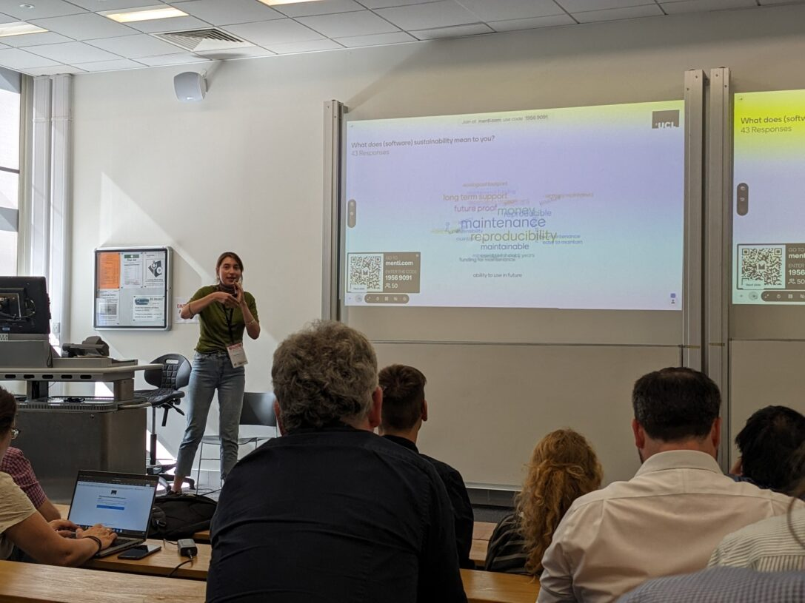

Stephen Thompson, Yagmur Idil Ozdemir, Miguel Xochicale, Tom Couch, Thomas Dowrick, Matthew J Clarkson
This work was made possible by UCL's Advanced Research Computing Centre through the Open Source Software Sustainability funding scheme and the Wellcome/EPSRC Centre for Interventional and Surgical Sciences (WEISS) (203145Z/16/Z).
The project funded the ongoing development of the software sustainability dashboard for SciKit-Surgery. SciKit-Surgery brings together a set of libraries targeted to support research in image guided surgery. The SciKit-Surgery team needed a tool to enable the monitoring of how sustainable software best practice was being followed across the project. Such tools are available for individual packages, but these were not suitable for a project consisting of many discrete packages.
In 2021 we developed a prototype dashboard to take a snapshot of metrics across different libraries, but the dashboard had no automation to enable updating as the libraries changed. The Open Source Software Sustainability funding scheme has enabled the development of an automated dashboard using existing infrastructure (GitHub actions) to create a constantly up to date dashboard.

Ozdemir, Yagmur Idil, Xochicale, Miguel, & Thompson, Stephen. (2023). Design and discussion of a (reusable) Sustainability Dashboard of Open Source Tools (1.0). RSLondonSouthEast, London, UK. Zenodo. https://doi.org/10.5281/zenodo.8337573
Ozdemir, Yagmur Idil, Xochicale, Miguel, & Thompson, Stephen. (2023). How to use and contribute to a software sustainability dashboard (1.0). RSE Conference 2023 (RSECon23), Swansea UK. Zenodo. https://doi.org/10.5281/zenodo.8337480